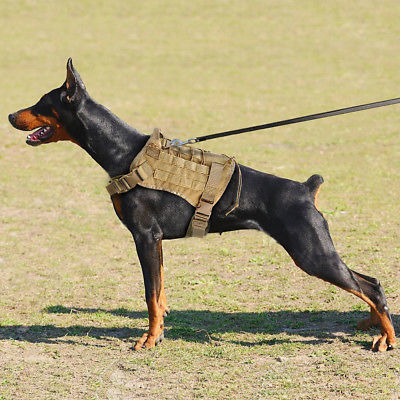

ДОБЕРМАН
Крупная служебная порода собак атлетического телосложения.

КРАТКАЯ ИНФОРМАЦИЯ
- Страна происхождения-Германия
- Время появления породы-ХIХ век
- Тип породы-Служебная собака
- Вес взрослой собаки-32-35 кг (самки), 40-45 кг (самцы)
- Рост (высота в холке)-63-68 см (самки), 68-72 см (самцы)
- Сколько живут-10-13 лет
- Популярные клички-Атлант, Барон, Дон, Зевс, Булат